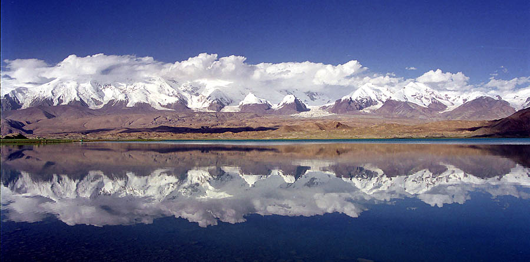

南疆以塔里木盆地与帕米尔高原为核心，汇聚喀什古城、慕士塔格冰峰、塔克拉玛干沙漠公路等标志性体验。人文密度极高，适合对丝绸之路、维吾尔文化有深度兴趣的旅行者。
经典线路：喀什—白沙湖—卡拉库里湖—塔什库尔干—盘龙古道—返回喀什—莎车—和田—民丰—塔中—库尔勒。帕米尔高原段海拔 4000 米以上，需防高反；沙漠公路则考验补给与车辆可靠性。
9–10 月胡杨季与天气稳定期重叠，是南疆最佳自驾窗口。部分边境区域需边防证，喀什、塔县检查严格。尊重民族宗教习俗，拍摄前先征得同意。
Itinerary
分日行程
喀什休整与古城
参观喀什古城、艾提尕尔清真寺（遵守开放规定）、百年老茶馆。适应时区与干燥气候，采购沙漠段补给。
喀什 → 塔什库尔干
沿中巴公路上行，经奥依塔克、白沙湖、卡拉库里湖、慕士塔格峰观景台。塔县海拔 3100 米，注意高反，石头城与金草滩可傍晚游览。
盘龙古道 → 返回塔县/喀什
挑战盘龙古道（需核实当年开放政策与车辆限制），俯瞰曲如发丝的公路。返回时可在卡拉库里湖另一侧光线下再拍。
喀什 → 莎车 → 和田
经莎车可访叶尔羌王陵、非遗十二木卡姆相关场馆。抵达和田，逛玉石巴扎（谨慎购买），为沙漠公路做准备。
和田 → 民丰 → 塔中
进入塔克拉玛干沙漠公路北线或南线（需提前确认入口），沿途胡杨与沙丘交替。塔中为沙漠中心补给点，油料与住宿有限。
塔中 → 库尔勒
穿出沙漠抵达库尔勒，可访博斯腾湖。长途驾驶后检查轮胎与空滤，沙漠细沙可能已进入滤芯。
库尔勒 → 库车 → 阿克苏
若走独库南段可经库车天山神秘大峡谷；否则绕行 G217/G314。库车老城与苏巴什佛寺遗址可选停。
Photo Essay
沿途影像



Highlights
核心景点
喀什古城
活态维吾尔古城，迷宫般巷道、巴扎与土陶作坊仍在日常运转。清晨与傍晚光线适合街拍，需尊重居民隐私。
卡拉库里湖
慕士塔格峰与公格尔峰倒映在冰蚀湖中，帕米尔高原最经典画面。风大时湖面波纹，晴天则镜面清晰。
盘龙古道
超过 600 个 S 弯的高海拔公路，俯瞰如巨龙盘踞山脊。对车辆与驾驶技术要求高，需查询开放与限行政策。
塔克拉玛干沙漠公路
世界最长贯穿流动沙漠的公路之一，两侧防护林与胡杨带延伸数百公里。塔中补给点像沙漠中的绿洲驿站。
石头城
塔什库尔干古代要塞遗址，俯瞰金草滩与雪山。与塔吉克族文化紧密相连，是帕米尔人文地标。
Route
途经站点
南疆枢纽
办理边防证，古城至少留 1 天。
帕米尔高原
海拔高，备氧气与保暖衣物。
玉石之都
沙漠公路前最后大补给点。
沙漠中心
加油、住宿条件有限，提前预订。
出沙漠
可接北疆或返回乌鲁木齐。
Practical
实用信息
- 帕米尔与沙漠段温差大，备抓绒与防风外套，即使夏季也需。
- 塔克拉玛干沙漠公路禁止随意偏离公路进入沙丘，防止陷车。
- 购买玉石、地毯等贵重品谨慎，选择正规商户并索要凭证。
- 南疆干燥，多饮水，注意唇裂与皮肤保湿。
- 宗教场所与巴扎内勿穿过于暴露，女性建议备头巾备用。
EV Tips
新能源出行提示
驾驶腾势 N7 等纯电 SUV 出发前，请特别注意以下事项：
- 喀什、库尔勒有较好快充覆盖，帕米尔与沙漠段几乎无快充，塔县前务必满电并备应急方案。
- 高海拔低温会影响电池性能，帕米尔段预留 40% 电量冗余更稳妥。
- 沙漠段注意沙尘进入充电口，补电前清洁接口并检查空滤。